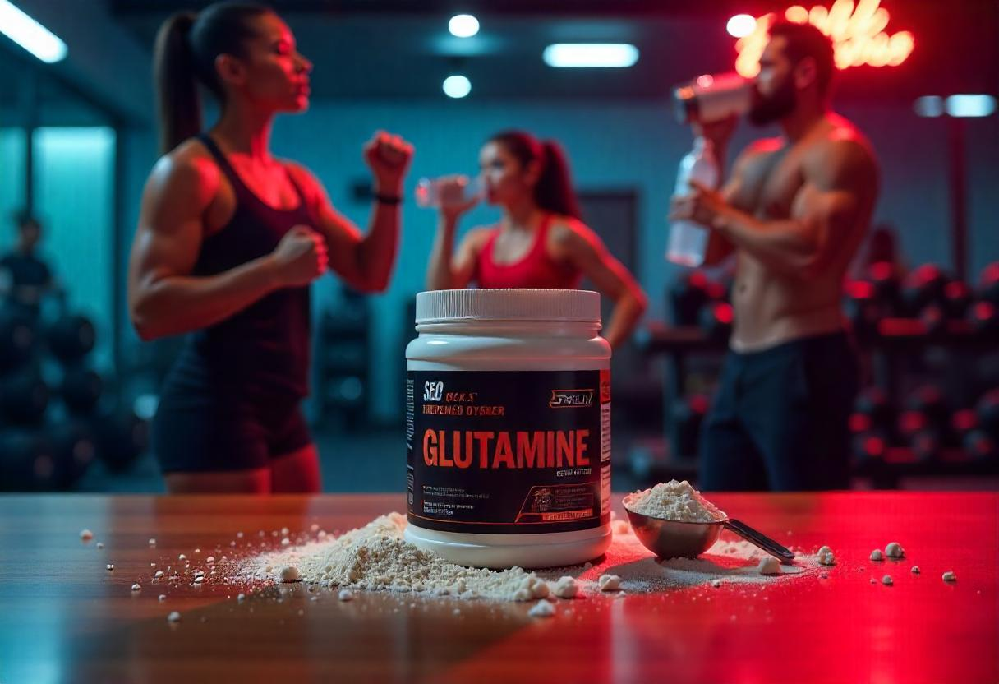

A glutamina é um aminoácido essencial para o corpo, com papel importante na recuperação muscular, no
sistema imunológico e na saúde intestinal.
Benefícios da Glutamina:
- Acelera a recuperação muscular após treinos intensos.
- Fortalece o sistema imunológico, principalmente durante períodos de estresse físico.
- Ajuda na saúde intestinal e na manutenção da barreira intestinal.
- Auxilia na síntese de proteínas e na redução do catabolismo muscular.
Onde Encontrar a Glutamina
A Glutamina pode ser encontrada em diversas lojas especializadas em suplementos alimentares, como:
- Loja X - Rua das Suplementos, 123
- Farmácia Y - Avenida da Saúde, 456
- Online: Sites como Mercado Livre, Amazon, e lojas especializadas em nutrição esportiva
Como Tomar a Glutamina
A Glutamina é geralmente consumida para ajudar na recuperação muscular, melhorar a imunidade e a saúde
intestinal. A forma mais comum de consumo é:
- 1 porção (normalmente 5g) dissolvida em água ou suco, após o treino ou antes de dormir.
- Também pode ser tomada pela manhã, em jejum, para otimizar a recuperação e o sistema imunológico.
É recomendável que seja tomada com líquidos sem açúcar, para garantir melhor absorção e evitar efeitos
indesejados.
Como é Produzida a Glutamina
A Glutamina é sintetizada no organismo, mas também pode ser obtida por meio da alimentação e de
suplementos. O processo de produção do suplemento de glutamina envolve:
- Extração de fontes naturais ricas em glutamina, como carnes, ovos e laticínios.
- Processamento químico para obter a glutamina em forma pura ou em pó.
- Secagem e embalagem do produto, garantindo sua estabilidade e eficácia.
Este processo assegura que o suplemento de glutamina seja eficiente na recuperação muscular e na saúde
intestinal.